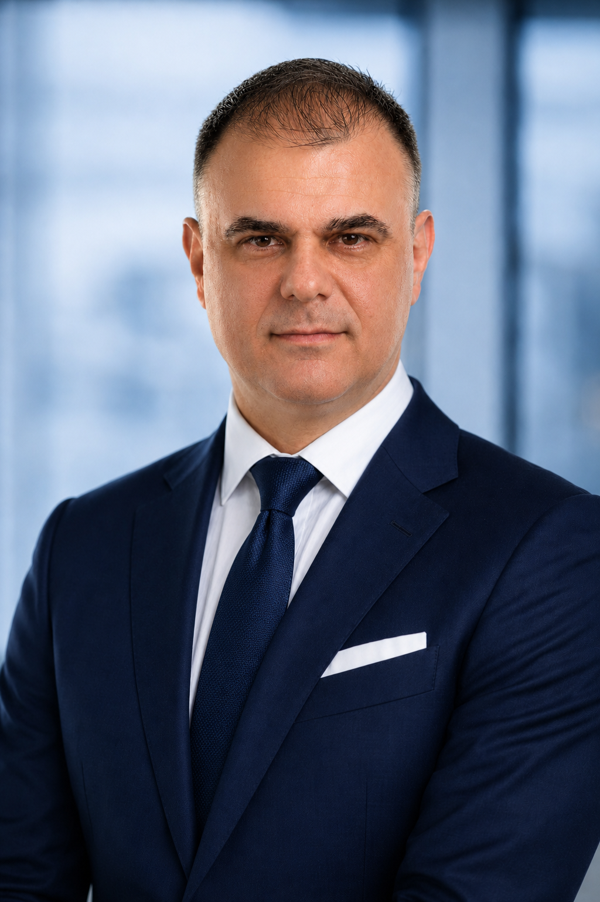

Enterprise Integration
Event-driven architecture, Kafka, IBM MQ, APIs, ESB and interoperability governance.
Hello, I'm Sefik Egriboz.
Solutions Architect with 24 years in airline IT, connecting enterprise integration, data platforms, mission-critical operations and AI-enabled solutions.

I have spent my career where technical architecture meets operational reality: developing and evolving systems that support thousands of daily airline activities, continuous data exchange and decisions that need to be right in real time.
From legacy modernization to event-driven integration, from airline operations platforms to graph-based AI, my work combines hands-on engineering, enterprise-scale design, technical leadership and delivery ownership.
Event-driven architecture, Kafka, IBM MQ, APIs, ESB and interoperability governance.
Operational data stores, canonical models, graph neural networks and production AI.
Scheduling, flight planning, operations control, NetLine and airline data standards.
Roadmaps, solution ownership, vendor evaluation, multidisciplinary teams and execution.
Explore how the same body of experience translates into different leadership and technical roles. Each focus has a dedicated CV below.
Designing event-driven, API-first integration and data platforms for always-on enterprise operations.
Download this CVSelected initiatives summarized from the five role-focused CVs. The project descriptions highlight reported outcomes rather than independent third-party validation.
Reframed callsign assignment as a quadratic assignment problem and built a graph-based AI solution using Neo4j, Graph Attention Networks and PyTorch Geometric.
Standardized enterprise messaging, streaming, API architecture and governance across a large and continuously running integration landscape.
Designed and built two Tier-0 operational data platforms that became authoritative sources for schedule, flight and operational flight-plan data.
Engineered a system to cross-check planned flight routes with automated checks and alarms before dispatch.
Developed a multi-currency cost consolidation and calculation engine using flight route, country entry and exit, and segment distance information.
Set roadmaps for six operational systems and led a five-vendor platform evaluation, including shortlisting, proof-of-concept work and business cases.
Note: Metrics and outcomes are stated as reported in the supplied CVs. Availability figure of 99.8% includes planned maintenance windows.
A continuous progression from hands-on software development into enterprise-scale architecture, technical leadership and product direction.
Career break · Istanbul
Focused on continued learning, cloud and AI certifications, and research on graph-based approaches to aviation safety.
Turkish Technology
Distinguished Expert; production AI for callsign safety, operational platform architecture, technical strategy and vendor assessments.
Turkish Technology
Integration governance across 200+ points, event-driven modernization, architectural standards and high-availability platforms.
Turkish Airlines
Built and evolved TKAODS and OFPDS, led mission-critical architecture, acted as platform product owner and managed delivery.
Turkish Airlines
Airline schedules integration, SchedConnect, real-time integration frameworks and the overflight cost engine.
Turkish Airlines
NetLine production implementation, mainframe modernization, application engineering and enterprise integrations.
Event-driven architecture · Apache Kafka · IBM MQ · ESB/SOA · REST/SOAP · API governance · Resilience patterns
Operational data stores · Canonical data models · ETL/ELT · Oracle · Neo4j · PyTorch Geometric · Graph neural networks
NetLine · IOCC · Flight planning · Schedule management · SchedConnect · IATA SSIM · PSS/DCS integration
Java · Python · C · PL/SQL · Linux/Unix · Git · Jenkins · UML · HLD/LLD · ADRs · SLA/SLO · Architecture reviews
Technical education, management perspective and professional qualifications across architecture, delivery, cloud and AI.
Five versions of my CV, each emphasizing a different aspect of the same career. Download an PDF to explore the full detail.
Enterprise integration · Data architecture · AI-enabled solutions
Schedule management · Operations control · Flight planning
Enterprise integration · Data platforms · Applied AI
Product strategy · Agile delivery · Programme leadership
Technology transformation · Integration · Programme delivery
Open to conversations about solution architecture, aviation technology, enterprise integration, AI-enabled systems and technical product leadership.